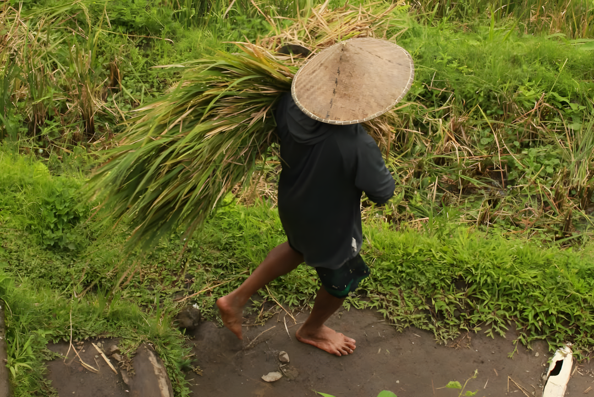
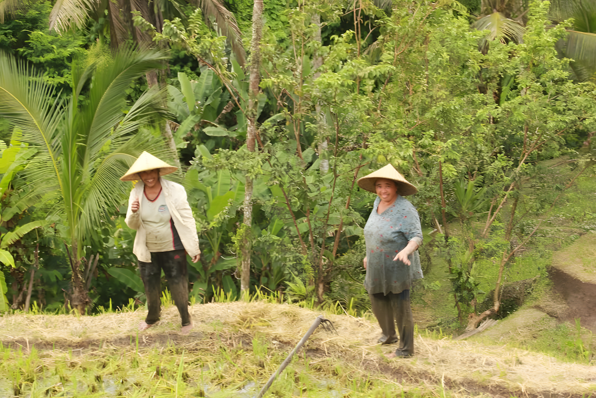
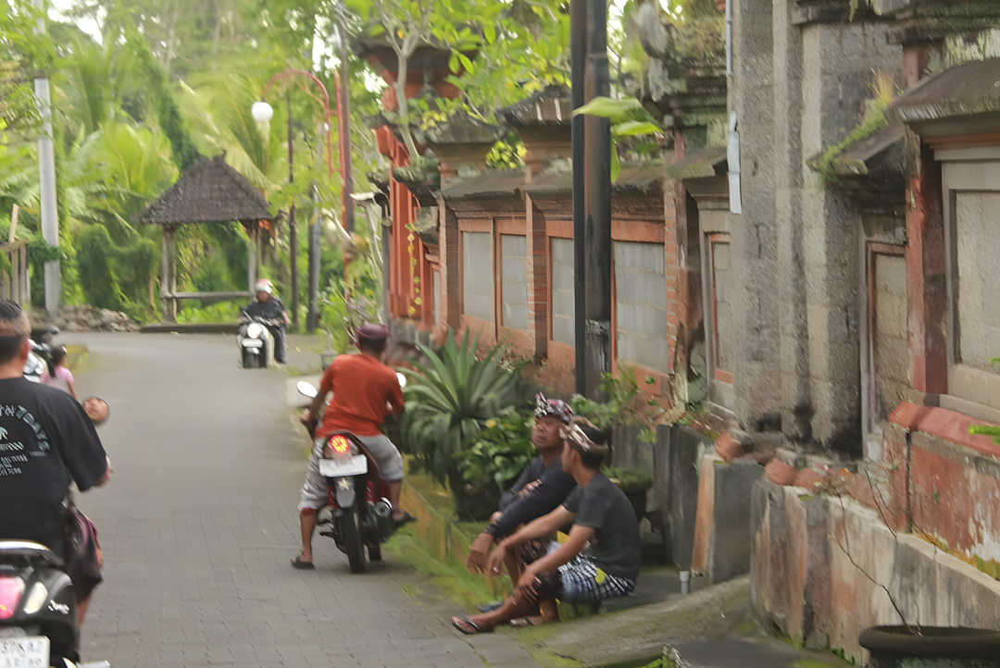
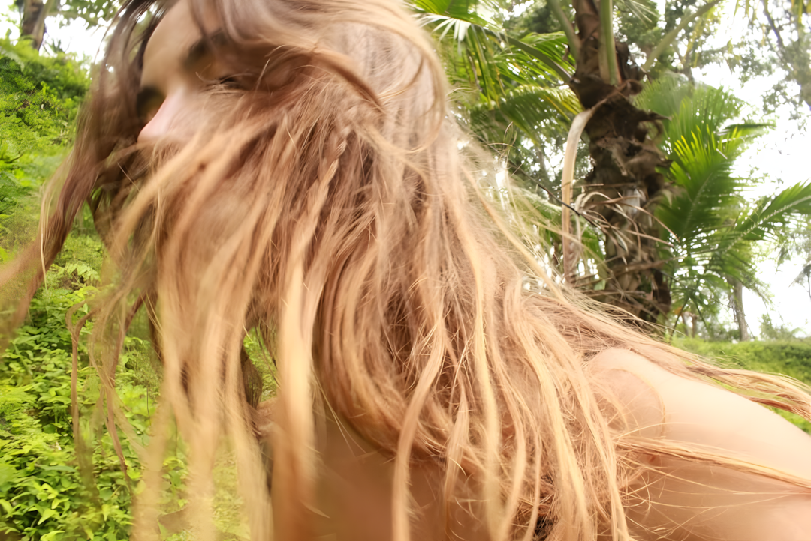
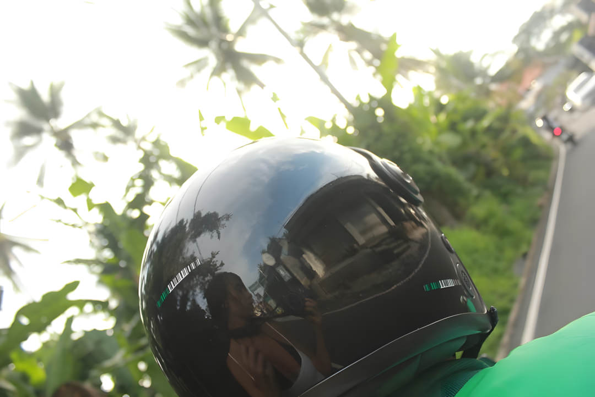
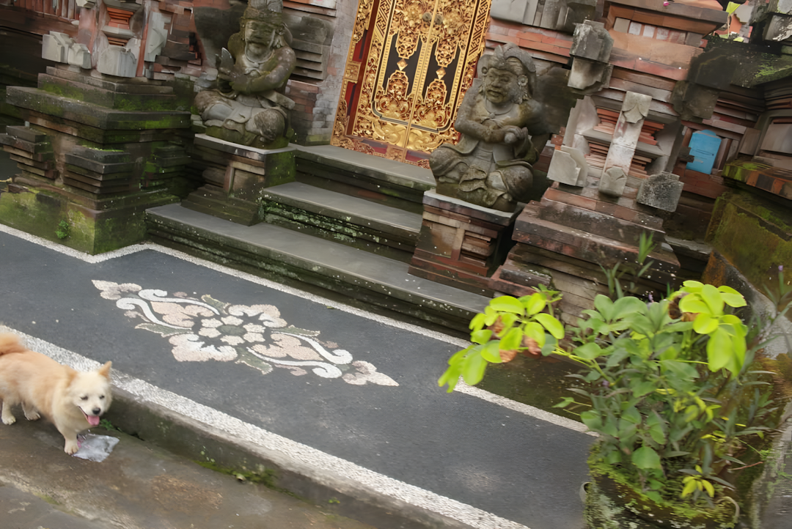
Эта серия появилась во время нескольких месяцев, проведённых в Тайланде. Сначала Маша фотографировала улицы, вывески и случайных прохожих. Но постепенно заметила, что почти на каждом кадре оказывается зелёный цвет. Он пробивался через заборы, разрастался вдоль дорог, заполнял пустые пространства между домами и появлялся там, где его совсем не ждёшь. В какой-то момент ей показалось, что поездка начинает запоминаться не местами, а оттенками зелёного.
Так появилась серия о вещах, на которые обычно не обращаешь внимания, пока они не начинают повторяться снова и снова.
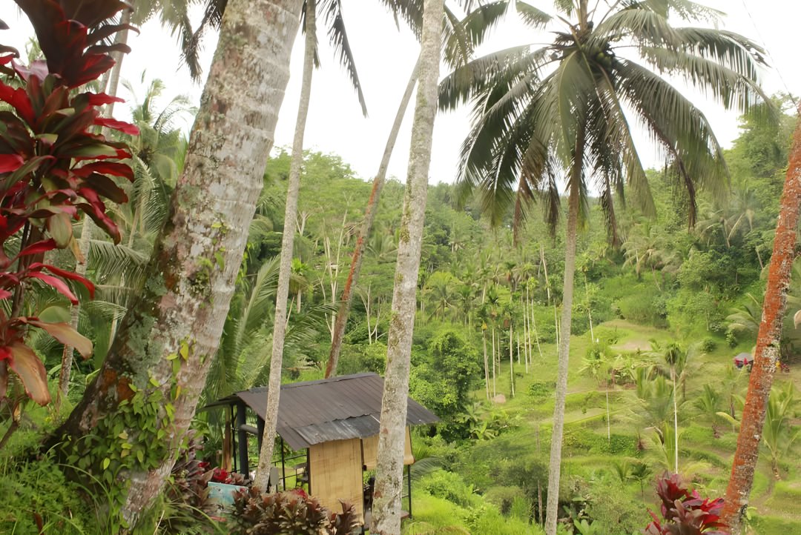
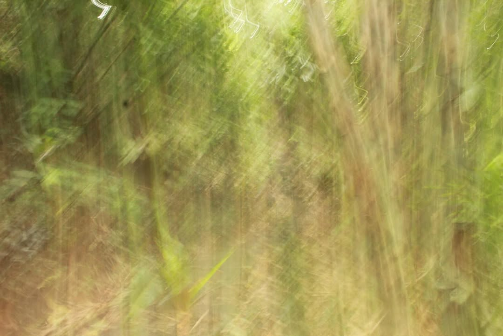
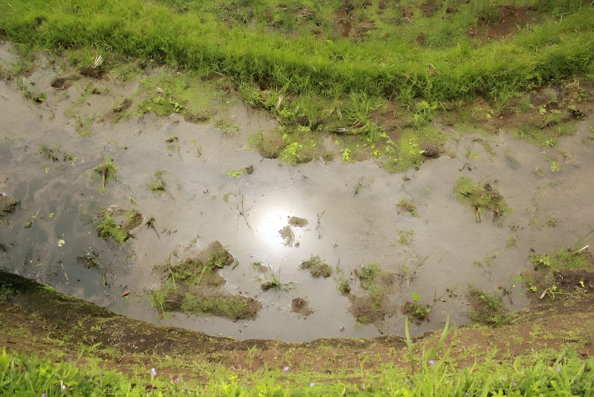
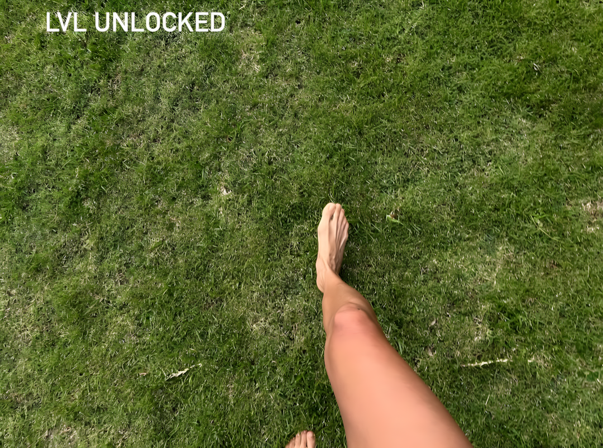
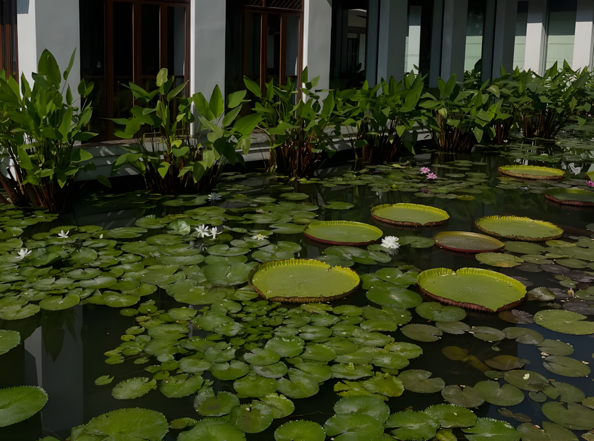
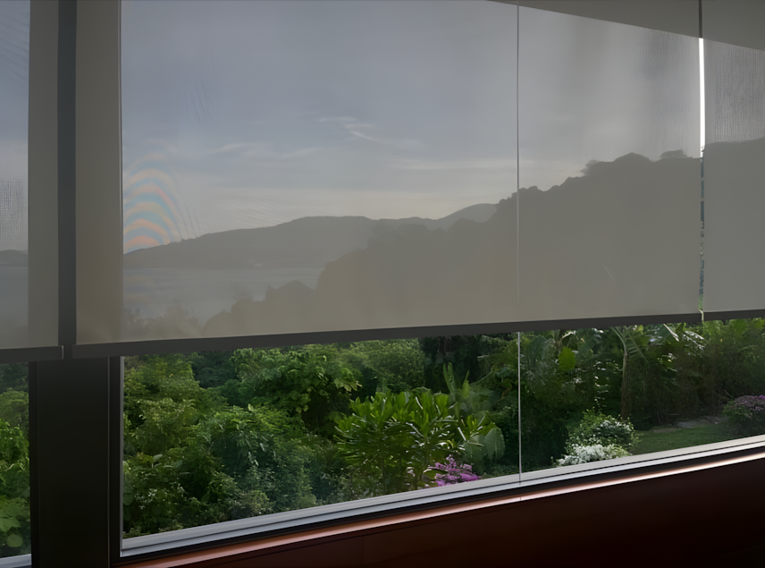

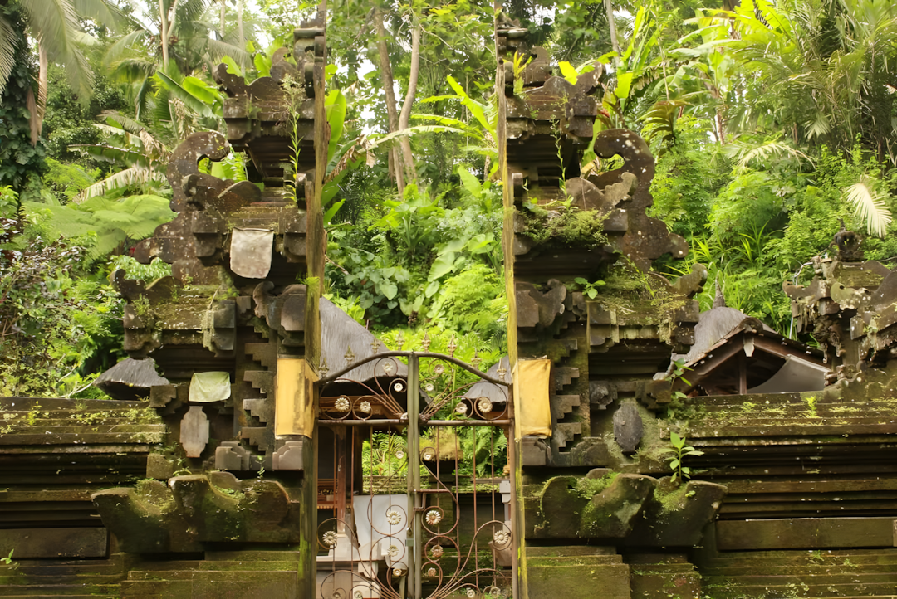
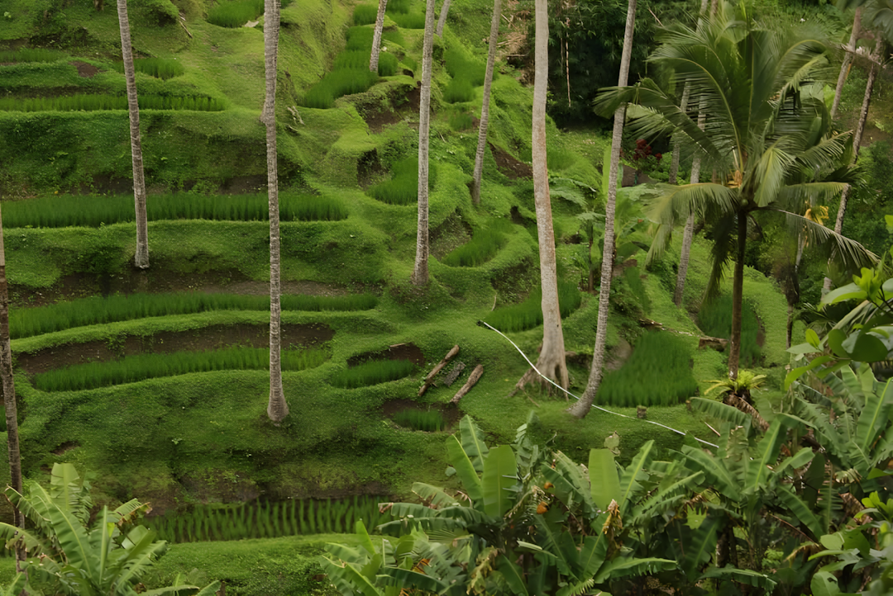
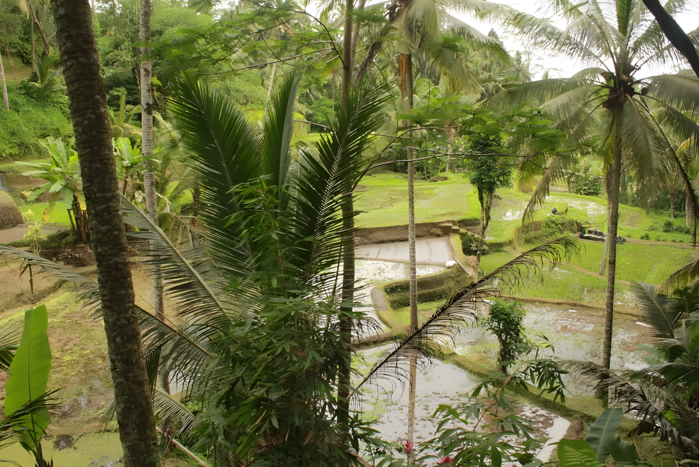
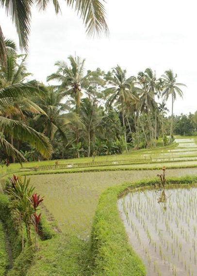